전자기사 (2004-09-05 기출문제)
1과목: 전기자기학
1. 진공 중의 도체계에서 콘덴서 극판의 면적을 2배로 하면 정전용량은 몇 배로 되는가? (단, 극판 간격은 일정하다.)
- 1/2배
- 1/4배
- 4배
- 2배
(정답률: 알수없음)

2. 다음 설명 중 잘못된 것은?
- 적산전력계의 아라고판(Alago Plate)의 회전은 이동자계의 원리에 의한다.
- 전자렌지(microwave oven)의 발열원리는 전자유도에 의한다.
- 전자조리기의 발열원리는 전자유도에 의한다.
- 토스터(toaster)기의 발열원리는 주울열에 의한다.
(정답률: 알수없음)
3. 선밀도 λ[C/m]인 무한장 직선도체를 축으로 하는 반지름 a[m]인 원통면상의 전계는 몇 V/m 인가?
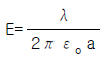
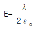
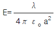
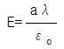
(정답률: 알수없음)
4. 평균 자로의 길이가 10cm, 평균 단면적이 2cm2 인 원형 솔레노이드의 자기인덕턴스를 1.2mH 정도로 하고자 한다. 여기에 필요한 권선수로 가장 적당한 것은?(단, 철심의 비투자율은 15000 으로 한다.)
- 6
- 12
- 24
- 29
(정답률: 알수없음)
5. 두 도체판이 직각으로 교차하고 있는 경우의 전계는 W=Z2의 변환으로 구해지는 바 이 때에 그림과 같은 W평면상의 등전위면 V 및 전기력선 U를 Z평면에 옳게 나타낸 것은?
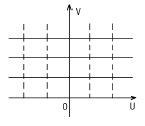
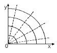
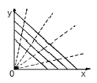
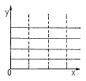
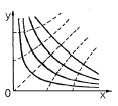
(정답률: 알수없음)
6. 그림과 같이 단면적이 균일한 환상철심에 권수 N1인 A코일과 권수 N2 인 B코일이 있을 때 A코일의 자기인덕턴스가 L1[H]라면 두 코일의 상호인덕턴스 M 은 몇 H 인가? (단, 누설자속은 0 이라고 한다.)
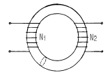
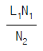
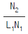
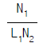
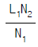
(정답률: 알수없음)
7. Z = 0 인 평면상에 한변이 2a[m]인 정사각형에 선전류I[A]가 반시계 방향으로 그림과 같이 흐를 때 정사각형의 중심점 C 의 자계의 세기 H 는 몇 A/m 인가?
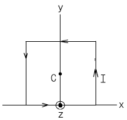
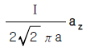
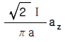
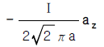
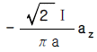
(정답률: 알수없음)
8. 최대 전계 Em = 6V/m인 10MHz의 평면파가 자유공간을 전파할 때 평균 포인팅 벡터의 크기는 몇 W/m2 인가?
- 4.77×10-2
- 4.77×10-3
- 9.54×10-2
- 9.54×10-3
(정답률: 알수없음)
9. 보기항 중 다른 세개와 차원식이 틀린 것은?(단, E : 전계의 세기, H : 자계의 세기, K: 도전률, i : 전류밀도, A : 자계의 벡터포텐샬이다.)
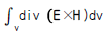
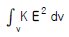
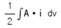
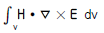
(정답률: 알수없음)
10. 무한히 긴 직선전류에 의한 자계의 세기[AT/m]를 구하는 식은?(단, r : 반지름, I : 전류이다.)
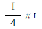
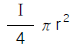
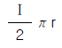
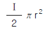
(정답률: 알수없음)
11. 자기회로의 퍼미언스(permeance)에 대응하는 전기회로의 요소는?
- 도전률
- 콘덕턴스
- 정전용량
- 엘라스턴스
(정답률: 알수없음)
12. 유전률 ε, 전계의 세기 E 인 유전체의 단위체적에 축적되는 에너지는?
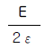
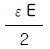
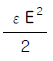
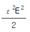
(정답률: 알수없음)
13. 자속밀도10Wb/m2의 자계 중에 10cm의 도체를 자계와 30도의 각도로 30m/s로 움직일 때, 도체에 유기되는 기전력은 몇 V 인가?
- 15
- 15√3
- 1500
- 1500√3
(정답률: 알수없음)
14. 자유공간 중에서 점 P(2,-4,5)가 도체면상에 있으며 이 점에서 전계 E = 3ax - 6ay + 2az[V/m]이다. 도체면에 법선성분 En 및 접선성분 Et의 크기는 몇 V/m 인가?
- En = 3, Et = -6
- En = 7, Et = 0
- En = 2, Et = 3
- En = -6, Et = 0
(정답률: 알수없음)
15. 길이 10cm, 단면의 반지름이 1cm인 원통형 자성체가 길이방향으로 균일하게 자화되어 있을 때 자화의 세기가 0.5Wb/m2 이라면 이 자성체의 자기모멘트는 몇 Wb·m 인가?
- 1.57×10-5
- 1.57×10-4
- 1.57×10-3
- 1.57×10-2
(정답률: 알수없음)
16. 자기유도계수(self inductance)를 구하는 방법이 아닌것은?
- 자기에너지법
- 자속쇄교법
- 벡터포텐셜법(Vector Potential Method)
- 스칼라포텐셜법(Scalar Potential Method)
(정답률: 알수없음)
17. 그림과 같은 평등 전계내에 유전체구가 있을 때 구내의 전계의 세기는?
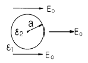
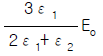
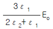
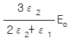
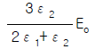
(정답률: 알수없음)
18. 전기력선의 성질에 대하여 틀린 것은?
- 전하가 없는 곳에서 전기력선은 발생, 소멸이 없다.
- 전기력선은 그 자신만으로 폐곡선이 되는 일은 없다.
- 전기력선은 등전위면과 수직이다.
- 전기력선은 도체내부에 존재한다.
(정답률: 알수없음)
19. 유전률이 각각 ε1, ε2인 두 유전체가 접한 경계면에서 전하가 존재하지 않는다고 할 때 유전률이 ε1인 유전체에서 유전률이 ε2인 유전체로 전계 E1이 입사각θ1=0°로 입사할 경우 성립되는 식은?
- E1=E2
- E1=ε1ε2E2
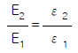
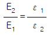
(정답률: 알수없음)
20. 그림과 같은 쌍극자에 의한 P점의 전위는 몇 V 인가? (단, 쌍극자 모멘트 M = Qℓ[C·m]라 하며, 길이의 단위는 m 이다.)
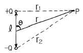
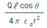
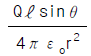
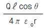
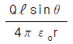
(정답률: 알수없음)
2과목: 회로이론
21. R-L 직렬회로의 과도응답에서 감쇠율은?
- R/L
- L/R
- R
- L
(정답률: 알수없음)
22. 2단자 임피던스가
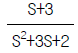
일 때 극점(pole)은?- -3
- 0
- -1, -2, -3
- -1, -2
(정답률: 알수없음)
23. 역률 80[%], 부하의 유효전력이 80[kW]이면 무효전력은?
- 20 [K Var]
- 40 [K Var]
- 60 [K Var]
- 80 [K Var]
(정답률: 알수없음)
24. 리액턴스 함수가
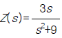
로 표시되는 리액턴스 2단자 망은?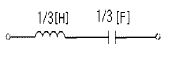
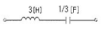
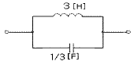
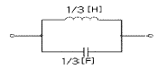
(정답률: 알수없음)
25. 다음 회로가 주파수에 무관한 정저항 회로가 되기 위한 R의 값은?
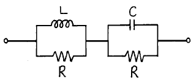
(정답률: 알수없음)
26. 다음 회로의 영상 임피던스 Z01 은 약 얼마인가?
- 4Ω
- 6Ω
- 5.2Ω
- 7.4Ω
(정답률: 알수없음)
27. 12개의 가지와 5개의 마디로 구성된 그래프의 나무가지(tree branch)의 수는?
- 2
- 3
- 4
- 5
(정답률: 알수없음)
28. "2개 이상의 전원을 포함하는 선형 회로망에서 회로 내의 임의의 점의 전류 또는 임의의 2점간의 전압은 각 각의 전원에 대해서 해석하여 합한다."라는 회로망 정리는?
- 노톤 정리
- 보상 정리
- 테브난 정리
- 중첩의 정리
(정답률: 알수없음)
29. 정현파 전압의 진폭이 Vm이라면 이를 반파 정류했을 때의 평균값은?
(정답률: 알수없음)
30. 다음 회로의 어드미턴스 파라미터 Y11은 얼마인가?
(정답률: 알수없음)
31. 회로에 흐르는 전류 I는? (단, E: 100[V], ω : 1,000[rad/sec] )
- 8.95
- 7.24
- 4.6
- 3.5
(정답률: 알수없음)
32. 이상변압기 두 코일의 권선비는?
(정답률: 알수없음)
33. 인 파형의 주파수는 약 얼마인가?
- 60 ㎐
- 120 ㎐
- 311 ㎐
- 377 ㎐
(정답률: 알수없음)
34. 이상적인 전류원의 내부 임피던스 Z는?
- Z=0
- Z=∞
- Z=1[Ω]
- Z는 정해지지 않는다.
(정답률: 알수없음)
35. ABCD 파라미터에서 단락 역방향 전달 임피던스는?
- A
- B
- C
- D
(정답률: 알수없음)
36. f(t)=sint cost의 Laplace 변환은?
(정답률: 알수없음)
37. 그림의 회로에서 독립적인 전류방정식 N과 독립적인 전압 방정식 B는 몇 개인가?
- N＝2, B＝3
- N＝1, B＝2
- N＝2, B＝2
- N＝3, B＝2
(정답률: 알수없음)
38. RL 병렬회로에서, 일정하게 인가된 정현파 전류의 위상 θ 에 대하여 저항에 흐르는 전류 위상 θ1과 인덕터에 흐르는 전류 위상 θ2을 나타낸 것으로 올바른 것은?
- θ ＜ θ1 ＜ θ2
- θ2 ＜ θ1 ＜ θ
- θ2 ＜ θ ＜ θ1
- θ1 ＜ θ ＜ θ2
(정답률: 알수없음)
39. 4단자 회로망에서 파라미터 사이의 관계로 옳은 것은?
- h22=Z22
(정답률: 알수없음)
40. R-C 직렬회로에 일정 전압 E[V]를 인가하고, t=0에서 스위치를 ON한다면 콘덴서 양단에 걸리는 전압 VC 는?
(정답률: 알수없음)
3과목: 전자회로
41. 그림의 발진회로에서 Z3가 인덕턴스일 때 이 발진회로는?
- R-C
- 브리지
- 콜피츠
- 하트레이
(정답률: 알수없음)
42. 트랜지스터를 베이스 접지에서 이미터 접지로 했더니 ICEO가 50배가 되었다. 트랜지스터의 β 는?
- 49
- 50
- 59
- 120
(정답률: 알수없음)
43. Push-Pull 증폭기가 단일 Transistor 증폭기에 비해 그 장점을 잘못 설명한 것은?
- 전원의 맥동에 의한 잡음제거
- 양극 효율 증대
- 기수고조파에 의한 일그러짐의 감소
- Push-Pull 증폭기의 큰 출력
(정답률: 알수없음)
44. 트랜지스터의 컬렉터 누설전류가 주위 온도 변화로 20㎂에서 150㎂로 증가할 때 컬렉터 전류가 1㎃에서 1.2㎃로 되었다면 안정도 S는 약 얼마인가?
- 1.5
- 1.8
- 2.0
- 2.2
(정답률: 알수없음)
45. 부궤환 증폭기에서 개방 루프 전압이득 변화범위가 Av =1,000±100인 경우 궤환 전압이득의 변화가 ±0.1%이하로 유지하려면 궤환 계수β의 값을 얼마로 하면 되는가?
- 0.099
- 1.38
- 1.87
- 3.67
(정답률: 알수없음)
46. 트랜지스터의 고주파 특성으로 차단주파수 fα는?
- 베이스 폭의 자승에 반비례하고, 정공의 확산 정수에 비례한다.
- 정공의 확산 정수에 반비례한다.
- 베이스 주행 시간에 비례한다.
- 베이스 폭의 자승에 비례한다.
(정답률: 알수없음)
47. 전가산기 회로(full adder)는?
- 입력 2개, 출력 4개로 구성
- 입력 2개, 출력 3개로 구성
- 입력 3개, 출력 2개로 구성
- 입력 3개, 출력 3개로 구성
(정답률: 알수없음)
48. 부궤환 증폭기의 특성으로 옳지 않은 것은?
- 잡음이 1/1-β A 만큼 감소한다.
- 이득이 1/1-β A로 감소한다.
- 주파수 대역이 1/1-β A로 좁아진다.
- 안정도가 1/1-β A 만큼 개선된다.
(정답률: 알수없음)
49. 논리 회로의 출력은?
(정답률: 알수없음)
50. 다음 회로의 진리표를 갖는 논리회로는?
- NAND
- Exclusive OR
- NOR
- full adder
(정답률: 알수없음)
51. 궤환 회로를 포함한 직렬형 정전압 회로의 특징을 잘못 기술한 것은?
- 부하가 가벼울 때의 효율은 병렬형에 비하여 휠씬 크다.
- 출력 전압의 넓은 범위에 걸쳐 쉽게 설계할수 있다.
- 증폭단을 증가시킴으로써 출력저항을 크게할수 있다.
- 증폭단을 증가시킴으로써 전압안정 계수를 매우 작게 할수 있다.
(정답률: 알수없음)
52. 그림과 같은 회로에서 컬렉터 전류 Ic를 구하면? (단,β =100 이고 실리콘 트랜지스터이며 VBE = 0.7[V]임.)
- 0.2 [㎃]
- 0.5 [㎃]
- 5 [㎃]
- 20 [㎃]
(정답률: 알수없음)
53. P채널 전계효과 트랜지스터(FET)에 흐르는 전류는 주로 어떤 현상인가?
- 전자의 확산현상
- 정공의 확산현상
- 전자의 드리프트(drift)현상
- 정공의 드리프트(drift)현상
(정답률: 알수없음)
54. 다음 궤환 발진기의 발진조건(barkhausen)을 나타낸 식이다. A가 발진기 회로에 들어 있는 증폭기의 증폭도, β 가 궤환량을 나타낼 때 옳은 식은?
- β A=0
- β A=1
- β A＜∞
- β A＞1
(정답률: 알수없음)
55. 어떤 파형의 상부와 하부의 두 레벨을 동시에 잘라내어 입력 파형의 극히 좁은 레벨을 꺼내는 회로는?
- 클리퍼
- 리미터
- 슬라이서
- 클램퍼
(정답률: 알수없음)
56. 소신호 증폭기 차단 주파수에서의 이득은 최대 이득의 몇 [%]인가?
- 60.6
- 70.7
- 75.5
- 78.5
(정답률: 알수없음)
57. 커패시터 필터를 가진 전파 정류 회로에서 맥동 전압을 나타낸 설명 중 옳은 것은?
- 맥동 전압은 부하 저항 및 콘덴서 용량 C에 반비례한다.
- 맥동 전압은 콘덴서 용량 C에만 반비례한다.
- 맥동 전압은 부하 저항 및 콘덴서 용량 C에 비례한다.
- 맥동 전압은 용량 C에만 반비례하고, 부하저항과는 관계가 없다.
(정답률: 알수없음)
58. 고주파 트랜지스터에서 fα 와 fβ 의 관계식은? (단, αo: CB의 저주파 단락 전류 증폭률, βo: CE의 저주파 단락 전류 증폭률)
- fβ = βofα
- fβ = (1 + αo) fα
- fβ = fα (1 - βo)
(정답률: 알수없음)
59. 다음 설명 중 옳은 것은?
- FM은 진폭을 변화시키는 진폭 변조이다.
- 각 변조에는 주파수 변조와 위상 변조 방식이 있다.
- 진폭 변조의 변조 입력은 반송파의 진폭과는 관계없다.
- 안테나를 통해 전파를 송출, 수신하는 경우 주파수가 높을수록 안테나 길이가 커야 한다.
(정답률: 알수없음)
60. B급 증폭기에서 컬렉터 전류는 얼마동안 흐르게 되는가?
- 반주기 동안
- 한주기 동안
- 반주기 이하
- 한주기와 반주기 사이
(정답률: 알수없음)
4과목: 물리전자공학
61. 베이스 접지전류 증폭율이 0.98일 때 이미터 접지 전류 증폭율은?
- 20
- 39
- 40
- 49
(정답률: 알수없음)
62. 반도체(Semiconductors)에 관한 설명 중 서로 옳지 않은 것은?
- 열전대 - Seebeck 효과
- 홀 발진기 - 자기 효과
- 전자 냉각 - Peltier 효과
- 광전도 셀 - 외부 광전 효과
(정답률: 알수없음)
63. 캐리어의 확산 거리에 대한 설명으로 옳은 것은?
- 확산계수와는 무관하다.
- 캐리어의 이동도에만 관계있다.
- 캐리어의 수명시간에만 관계있다.
- 캐리어의 수명시간과 이동도에 관계있다.
(정답률: 알수없음)
64. P형 불순물 반도체에서 전자의 농도를 나타낸 것은?(단, Na는 억셉터의 농도, ηi는 진성반도체에서 캐리어의 농도)
- Na-ηi
- Na+ηi
(정답률: 알수없음)
65. 다음 설명 중 옳지 않은 것은?
- 진성반도체에서 전자의 밀도와 정공의 밀도는 같다.
- 불순물 반도체의 고유저항은 진성반도체의 고유저항보다 크다.
- 열적 평형상태에서 전자와 정공의 열적 생성과 재결합율은 같다.
- 캐리어의 재결합율은 전자와 홀의 농도에 비례한다.
(정답률: 알수없음)
66. 반도체의 특성에 대한 설명 중 옳지 않은 것은?
- 온도에 의해 도전율이 현저하게 변화한다.
- 불순율이 증가하면 고유 저항이 증가한다.
- 미량의 불순물을 첨가하면 도전율은 거의 비례하여 증가한다.
- 홀 효과가 크다.
(정답률: 알수없음)
67. Pauli의 배타율 원리를 만족하는 분포 함수는?
- Fermi-Dirac 분포
- Bose-Einstein 분포
- Shrodinger 파동방정식
- Maxwell-Boltzmann 분포
(정답률: 알수없음)
68. 사이리스터(thyristor)의 설명 중 옳지 않은 것은?
- 게이트 단자가 있다.
- 두 가지의 안정 상태를 가진다.
- 이중 베이스를 가지고 있다.
- 3개 또는 그 이상의 PN접합으로 이루어진다.
(정답률: 알수없음)
69. 진성반도체에 있어서 전도대의 전자밀도 n은 에너지gap Eg의 크기에 따라 변한다. 다음 중 옳은 것은?
- n은 Eg의 증가에 지수 함수적으로 증가한다.
- n은 Eg의 증가에 지수 함수적으로 감소한다.
- n은 Eg에 반비례한다.
- n은 Eg에 비례한다.
(정답률: 알수없음)
70. 순수 반도체에서 온도가 상승하면?
- 반도체의 저항이 증가한다.
- 정공이 전도대로 이전한다.
- 원자의 에너지가 증가한다.
- 원자의 에너지가 감소한다.
(정답률: 알수없음)
71. 과대 전류에 대한 보호용으로 사용되는 다이오드는?
- 리드 다이오드
- 제너 다이오드
- 터널 다이오드
- 온도형 다이오드
(정답률: 알수없음)
72. 에피텍셜(epitaxial) 성장이란?
- 다결정의 Ge 성장
- 다결정의 Si 성장
- 기판에 매우 얇은 단결정의 성장
- 기판에 매우 얇은 다결정의 성장
(정답률: 알수없음)
73. 진공속의 텅스텐(W) 표면에서 전자 1개가 방출하는데 최소한 몇 Joule의 에너지를 필요로 하는가? (단, 텅스텐의 일함수는 4.52[eV]이다.)
- 4.52[J]
- 18.127×10-18[J]
- 11.602×10-19[J]
- 7.24×10-19[J]
(정답률: 알수없음)
74. 다음은 드브로이(de Broglie) 전자파의 파장 λ 를 나타내는 관계식이다. h에 가장 합당한 것은?
- 일함수
- 페르미(Fermi)의 상수
- 프랭크(Plank)의 상수
- 볼쯔만(Boltzmann)의 상수
(정답률: 알수없음)
75. 트랜지스터의 평형 상태에 대한 설명으로 옳지않은 것은?
- 세 단자가 접속되어 있는 상태이다.
- 페르미 준위는 모든 곳에서 균일하다.
- 트랜지스터가 열평형 상태인 경우이다.
- 다수 캐리어의 확산 운동과 소수 캐리어의 드리프트 운동이 균형을 유지한 상태이다.
(정답률: 알수없음)
76. 2중 베이스 다이오드(double base diode)는?
- 역 다이오드
- 쇼트키 다이오드
- UJT
- 쇼클리 다이오드
(정답률: 알수없음)
77. 어떤 도체의 단면을 1[A]의 전류가 흐를 때 이 단면을 0.01초 동안에 통과하는 전자수는? (단, 전자의 전하량 e=1.6×10-19[C]이다.)
- 6.25×1016[개]
- 6.25×1018[개]
- 6.25×1020[개]
- 6.25×1022[개]
(정답률: 알수없음)
78. 빛의 파동성을 입증할 수 있는 근거는?
- 산란 현상
- 회절 현상
- 광전 현상
- 컴프턴(compton) 효과
(정답률: 알수없음)
79. 진성반도체 Si가 300[°K]에서 저항율 636[Ωㆍm], 전자 및 정공의 이동도를 각각 0.25[m2/VㆍS], 0.15[m2/VㆍS]라 하면, 그 때의 전자 밀도는?(단, e=1.602×10-19[C])
- 약 4.9×1016[개/m3]
- 약 5.2×1015[개/m3]
- 약 4.2×1014[개/m3]
- 약 2.45×1016[개/m3]
(정답률: 알수없음)
80. 평행판 A, B 사이의 거리가 1[cm]이며, 판 B에 대한 판 A의 전위는 +100[V]이다. 초기속도 0으로 판 B를 출발한 전자가 판 A에 도달하는데 걸리는 시간은 몇 [sec]인가?
- 3.37×10-7
- 1.69×10-7
- 1.69×10-9
- 3.37×10-9
(정답률: 알수없음)
5과목: 전자계산기일반
81. 전자계산기의 주요 장치를 설명한 것 중 옳지 않은 것은?
- 연산장치 : 산술 및 논리연산을 처리한다.
- 제어장치 : 기계어를 해석하는 기능을 갖고 있다.
- 보조기억장치 : 데이터나 프로그램을 일시적으로 기억시킨다.
- 입ㆍ출력장치 : 필요한 정보의 입ㆍ출력을 담당하는 장치이다.
(정답률: 알수없음)
82. 다음에 실행할 명령의 번지를 갖고 있는 레지스터는?
- program counter
- instruction register
- memory buffer register
- control address register
(정답률: 알수없음)
83. 서브 프로그램 호출을 구현하는데 많이 쓰이는 데이터 구조는?
- Queue
- Dequeue
- Linked list
- Stack
(정답률: 알수없음)
84. 주소 설계시 고려해야 할 사항이 아닌 것은?
- 주소를 효율적으로 나타낼 수 있어야 한다.
- 주소공간과 기억공간을 독립시켜야 한다.
- 사용자에게 사용하기 편리해야 한다.
- 캐시 메모리가 있어야 한다.
(정답률: 알수없음)
85. 다음 그림의 연산 결과를 올바르게 나타낸 것은?
- 0001
- 0101
- 0111
- 1111
(정답률: 알수없음)
86. 단위 프로그램에서 동일한 기억 장소를 함께 사용하고 있는 다른 이름의 변수를 무엇이라고 부르는가?
- Alias
- Coroutine
- Overloading
- Side effect
(정답률: 알수없음)
87. IRG(Inter Record Gap)로 인한 기억공간의 낭비를 줄이기 위하여 물리적 레코드(record)를 만드는데 필요한 것은?
- 버퍼링
- 맵핑
- 블록킹
- 페이징
(정답률: 알수없음)
88. 목적 프로그램을 생성하지 않는 방식은?
- interpreter
- compiler
- assembler
- micro-assembler
(정답률: 알수없음)
89. 직렬 데이터 전송(Serial Data Transfer) 방식 중 양쪽 방향으로 동시에 데이터를 전송할 수 있는 방식은?
- 단순 방식(Simplex)
- 반이중 방식(Half-Duplex)
- 전이중 방식(Full-Duplex)
- 해당하는 방식이 없다.
(정답률: 알수없음)
90. 컴퓨터에서 주소와 기억장소를 결부시키는 것을 무엇이라 하는가?
- Interrupt
- Mapping
- Merging
- Overlapping
(정답률: 알수없음)
91. 인터럽트를 발생시키는 모든 장치들을 직렬로 연결하고 우선순위가 높은 순서로 연결하는 방식은?
- DMA
- Polling
- Daisy-Chain
- Vectored Interrupt
(정답률: 알수없음)
92. 다음 보기의 주소지정방식은?
- 자료자신(immediate addressing mode)
- 직접주소지정방식(direct addressing mode)
- 간접주소지정방식(indirect addressing mode)
- 상대주소지정방식(relative addressing mode)
(정답률: 알수없음)
93. 65가지의 서로 다른 사항들에 각각 다른 2진 코드 값을 주고자 한다. 이 경우 최소한 몇 비트가 요구되는가?
- 6
- 7
- 8
- 9
(정답률: 알수없음)
94. 256kbits 용량의 DRAM을 8개 사용하여 2bytes KS 한글 코드를 몇 개나 기억 시킬 수 있는가?
- 256
- 128
- 64
- 32
(정답률: 알수없음)
95. 에러를 찾아서 교정을 할 수 있는 코드는?
- hamming code
- ring counter code
- gray code
- 8421 code
(정답률: 알수없음)
96. 8비트 데이터에 홀수 패리티 비트(odd parity bit)를 첨가할 때 옳지 않은 것은?
- 111110000
- 110011000
- 101001110
- 100100010
(정답률: 알수없음)
97. CPU를 구성하고 있는 요소 중 중요한 두 부분은?
- 제어장치, 기억장치
- 연산장치, 제어장치
- 산술장치, 연산장치
- 연산장치, 논리장치
(정답률: 알수없음)
98. 기억 장치에서 명령어를 읽어 CPU로 가져오는 것을 무엇이라고 하는가?
- Indirect
- Execute
- Interrupt
- Fetch
(정답률: 알수없음)
99. 마이크로컴퓨터의 기본 동작에 필요한 프로그램은?
- 모니터 프로그램
- 인터프리터 프로그램
- 시스템 프로그램
- DOS 프로그램
(정답률: 알수없음)
100. 인터럽트에 대한 설명 중 옳지 않은 것은?
- 하드웨어의 오류에 의해 발생하기도 한다.
- 인터럽트가 발생하면 특정한 일을 수행한다.
- 프로그램의 수행을 중단시키기 위해 사용되기도 한다.
- 인터럽트가 발생하면 현재 수행 중인 프로그램은 무조건 종료된다.
(정답률: 알수없음)